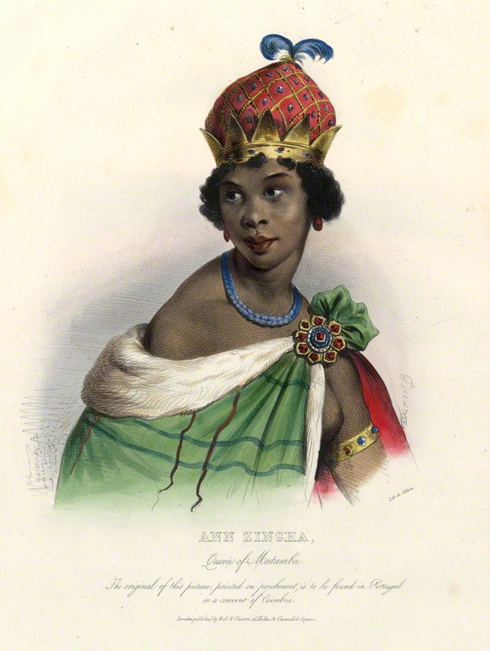

THE SITTING TRUCE
She ends battles by getting the enemy to agree to it — and Heaven holds them to the signature.

THE SITTING TRUCE
She ends battles by getting the enemy to agree to it — and Heaven holds them to the signature.
Feature map
Level-by-level features, as the figure refined them.
Propose Terms
action, 2 CE
Tier IV · Buffer (Parley-Controller) · Suggested CE ability: CHA · Primary verb: Convene. Technique DC = 8 + proficiency bonus + CHA modifier. All Terms require the target to hear and understand her (magical translation counts). Every creature accepts or declines freely — declining is always safe, costs nothing, and requires no roll. This is the willing-decline valve, built into the foundation.
Nzinga speaks Terms to up to PB creatures within 60 ft that can hear her: no signatory shall attack or directly harm another signatory, for 1 minute (concentration). Each creature individually accepts or declines. Signatories gain 1d6 + CHA temporary HP on signing — the consideration. Breaking the truce triggers the Witnessed Word (see L3). At any site of negotiation — Luanda, Matamba, the 1656 treaty grounds — her Terms reach 120 ft, the Witnessed Word costs 1 CE, and she has advantage on Charisma checks: the land testifies.
The Envoy's Composure
passive
Nzinga has advantage on saves against being charmed or frightened, and cannot be silenced by non-magical means while speaking Terms. The diplomat is always heard.
The Witnessed Word
reaction, 2 CE
When a signatory of her truce attacks or directly harms another signatory, Heaven's price fires: the breaker takes 3d8 psychic damage (WIS save vs her DC halves). This is Heaven-enforced — not an attack, cannot be counterspelled. You signed. Heaven heard you.
Consideration
passive
When a truce is signed, each signatory may also end one condition affecting it — frightened or charmed, signatory's choice — as the diplomat's mercy clause. The signing temp HP increases to 2d6 + CHA.
The 1656 Precedent
action, 5 CE, once per short rest
Nzinga invokes her historical peace: one active truce she brokered extends to 10 minutes, and signatories have advantage on saving throws while it holds. The precedent holds.
All Parties at the Table
passive
Her Terms may now broker truces between opposing enemy factions — she can set the table between two forces fighting each other, neither of them hers. Every creature at such a table still accepts or declines freely — the willing-decline valve applies to all parties, always. The diplomat serves any table.
The Congress
action, 8 CE, once per day
For 10 minutes, Nzinga may Propose Terms as a bonus action, to up to 2×PB creatures; and a signatory compelled to break the truce must first succeed on a WIS save vs her DC — the truce resists compulsion. The congress is in session.
Maximum, Domain, or equivalent.
Capstone material.
Maximum: THE PEACE THAT OUTLIVED HER (action, 10 CE, once per long rest)
One truce she brokers becomes lasting — 24 hours, persisting even if she falls unconscious or dies. Breaking it triggers the Witnessed Word at 6d8 psychic (WIS save vs her DC halves, as with the base Witnessed Word — invented clarification). Her treaties hold beyond her death — by vow, by law.
Domain Expansion: THE CONGRESS OF MATAMBA (full-turn action, 20 CE)
60-ft enclosed Domain. 800 clash points · 5-round burnout · 2-minute duration (per zack's Tier IV bookkeeping). - Sure-hit (allies): every willing creature in the Domain becomes a signatory of the Congress Truce — no signatory may attack another; each regains 2d8 + CHA HP when the Domain opens (the consideration, freely accepted). - Sure-hit (enemies): every enemy hears the Terms and may accept or decline freely — the valve, Domain-wide. Those who accept become signatories, bound and considered. Those who decline suffer no penalty for declining. For the Domain's duration, attacks against signatories have disadvantage — the table's consensus holds against the holdouts. The table, set at eye level: no one in the Domain fights without having been offered the alternative.
- Clash points
- 800
- Burnout
- 5 rounds
- Duration
- 2 minutes
- Radius
- 60-ft enclosed Domain
- Activation ✦
- full-turn action
- CE cost ✦
- 20
✦ Canon: figure Domains are Specific Domains — the stated profile governs, not the player point-unlock table.
THE SEAT REMAINS (passive)
While any truce she brokered is in effect, Nzinga cannot be reduced below 1 HP by a signatory's attack. Once per long rest, when she would be reduced to 0 HP by any means, the truce's consideration sustains her — she drops to 1 HP instead. The negotiator always keeps her seat.
Build-defining options.
This technique grants Innate Technique Feats — hand-authored applications of the figure's art, available in the builder's feat picker when you select this technique.
Edge cases and shared systems.
Campaign canon notes